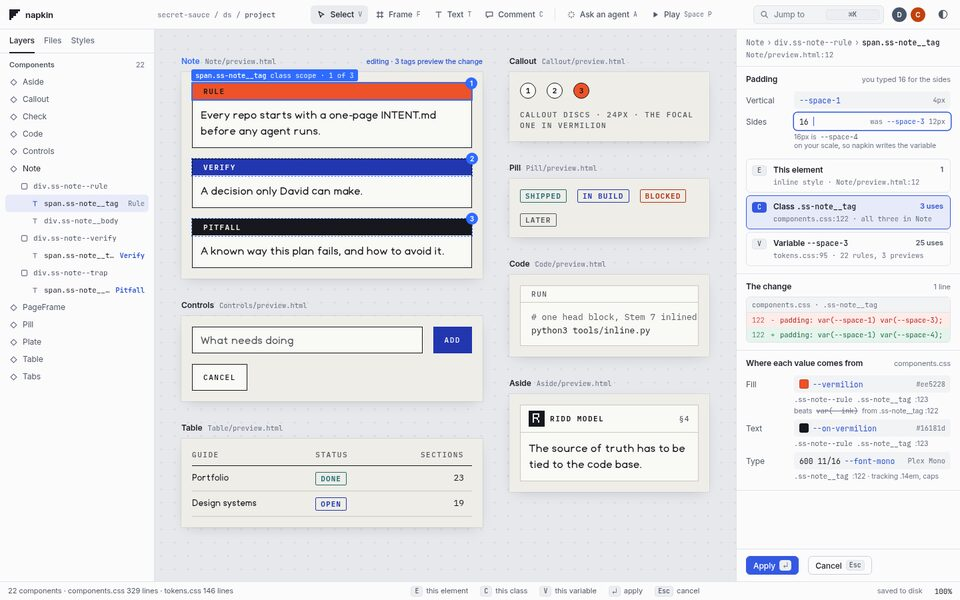
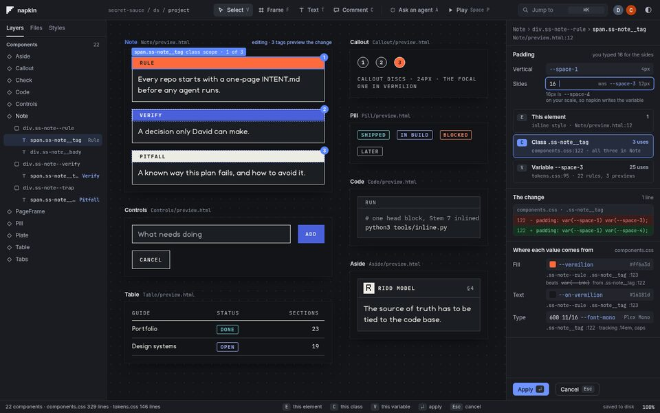
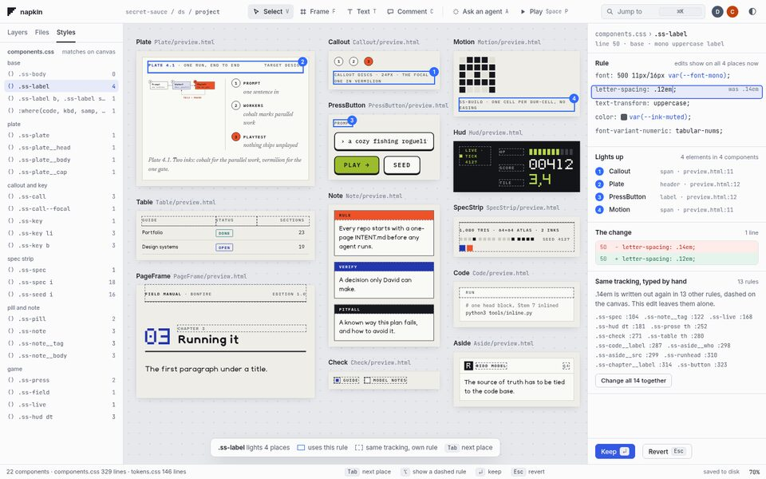
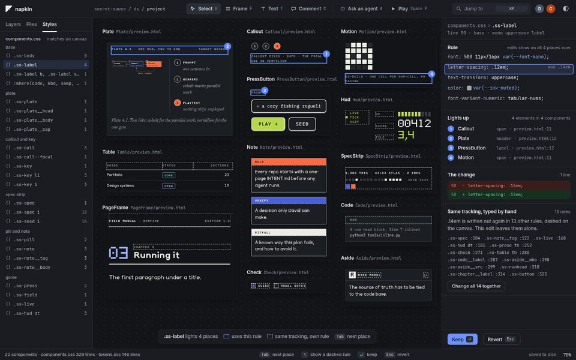
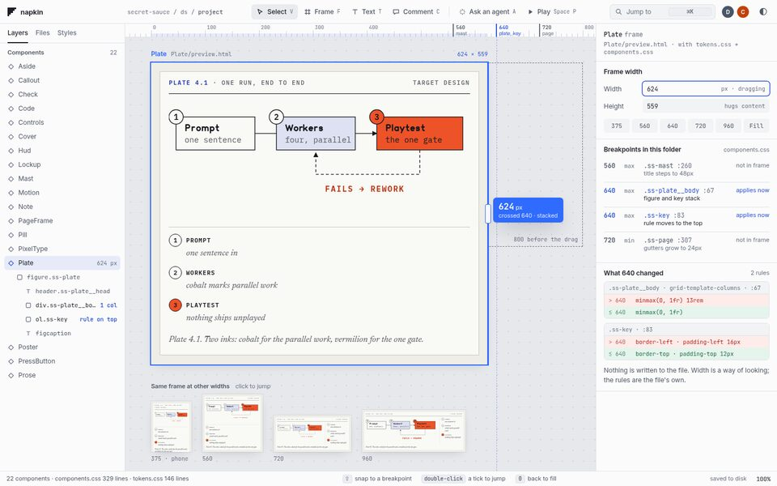
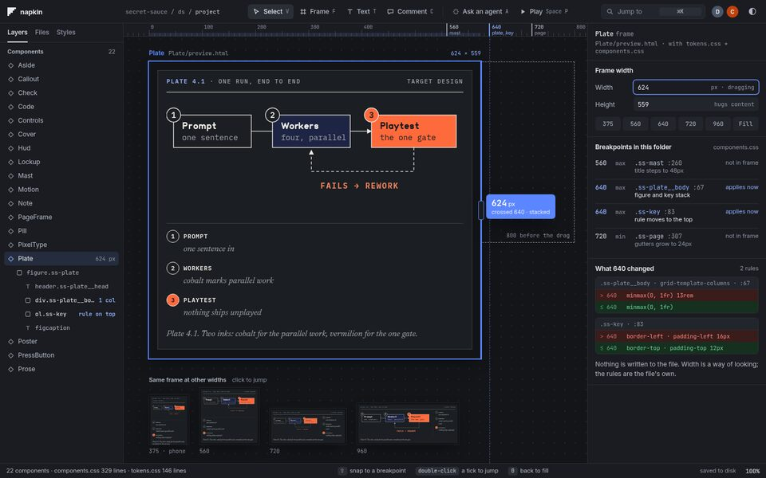
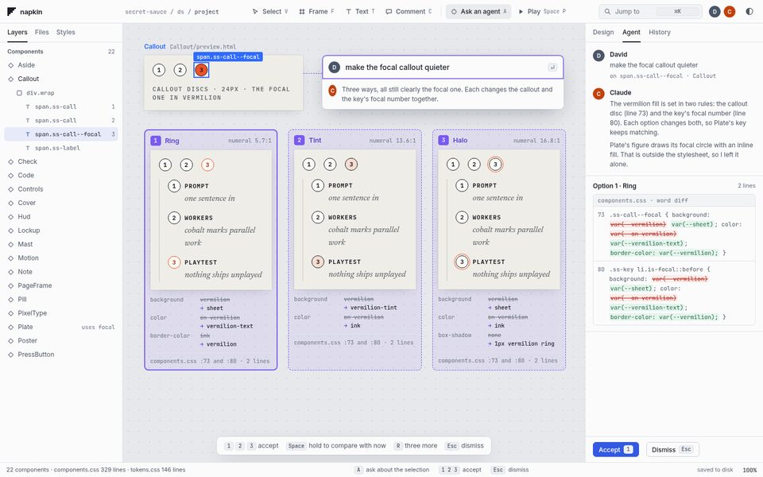
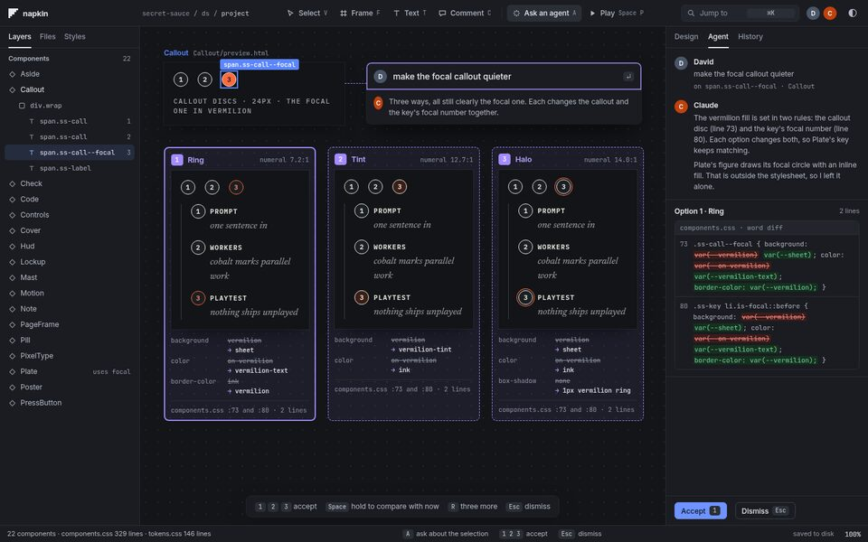

- done
- running now
- waiting for David
napkin Dream 2
Open the files you have. See them as a browser draws them. Edit them in place, with agents, in an interface a designer would choose over Figma.
On 2026-10-30, David found that napkin couldn't open his own design system. Secret Sauce's components are plain HTML and CSS, and napkin only read React files written its own way. He said napkin is meant to be HTML/CSS first with React allowed, to render the files it loads as they are, and not to impose a token system. He also set the bar: "better than Figma", not a screenshot-for-screenshot match, but features and UX a designer would rather use, and that inspire. This page is the re-dream that came out of that: where napkin stands, what it should become, how each part is checked, the target mockups, and the plan. The AI lead (Claude, Opus) wrote it. David's decisions are marked as his.
Where napkin stands
The first build passed 140 of its 141 criteria, but every one of them assumed a world of React files in napkin's own dialect.
| Measured 2026-10-30 | Result |
|---|---|
Open secret-sauce ds/project (23 HTML components, 1 shared CSS file) | 0 found "0 TSX files: 0 editable, 0 read-only" |
| Open shadcn-style React components | 0 of 61 editable |
| What napkin expects | components/<Name>.tsx in a narrow dialect (21 allowed tags, style objects), a <Name>.napkin.json sidecar per component, and a token source named in napkin.json |
| What its agent guide says | "napkin edits real React components: components/<Name>.tsx plus a <Name>.napkin.json sidecar." |
What changes
The file is the truth, as it is. napkin adds nothing to your folder except the edits you make.
| Today | Dream 2 |
|---|---|
Only components/*.tsx in a narrow dialect | Any folder. .html and .css are first-class; .tsx and .jsx also open. |
| A file outside the dialect is read-only as a whole | Everything renders. Edits are refused one spot at a time, with the reason. |
A sidecar per component, plus napkin.json | Nothing required. Canvas layout and remembered choices live outside your folder. |
A token source configured in napkin.json | Tokens are the CSS variables your own files define. Nothing imposed. |
| Variants as base plus overrides in a sidecar | HTML: the variants already in the file (modifier classes, repeated examples). React: props. |
| Judged against Paper (won) and Figma (undecided) | A designer would choose napkin over Figma (chapter 3, D3). |
The dream, and how each part is checked
Each dimension has a measure written down before any building starts. Builders can't edit the measures.
| Dimension | Measure | Pass |
|---|---|---|
| D1 · Opens anything | napkin's render compared pixel for pixel with Chromium opening the same file, at the same width, with the same stylesheets. Corpus: secret-sauce components and recipes, sample-40, playdough's shadcn components, 10 edge files. | 100% render; ≤0.1% of pixels differ per component |
| D2 · Tiny, exact edits | 60 scripted edits: text, attributes, classes, inline style, CSS rules, variables, insert, move, delete, React props. Each is checked by its diff, a byte compare of everything else, the render after reopening, and undo. | Only the changed span; 0 reformatting; undo restores the file byte for byte |
| D3 · Chosen over Figma | A scripted journey per moment (chapter 4), walked by a fresh critic. A designer panel of three fresh critics (Sonnet, Codex, Opus) watches napkin do real work on secret-sauce and answers: "which would you open tomorrow, and what would send you back to Figma?" | Every journey passes; 2 of 3 choose napkin; every "back to Figma" reason fixed or ruled out by David; 0 serious axe issues; CLS 0. David's verdict is final. |
| D4 · Nothing imposed | napkin open <folder> on each corpus folder, then one edit; git status after | 1 command; 0 config files; 0 files added; first render ≤ 2 s for 23 components |
| D5 · The proving demo, on HTML | A whole-product walk: a person and an agent edit secret-sauce's Callout and bundle.css live | Rejected edit never lands; the diff is exactly the accepted edits; files still open in a plain browser |
| D6 · Nothing lost | Today's suite | Canvas, keys, history, agents and performance keep passing. Criteria that only existed for sidecars or the dialect are retired, each with a reason for David. |
Eleven moments Figma can't do
Figma draws a picture of your product. napkin runs the real files, so it can do these. The four outlined in blue are mocked up in chapter 5.
- 1It's alive
Hover, focus, animation and scroll work in place. Hold Space-P to play; let go to edit.
- 2Edit at the right scopemockup
The inspector shows where each value comes from. One key picks this element, this class (with its use count) or this variable.
- 3One rule lights up everywheremockup
Select a rule or variable and every place it applies glows. Edit once; the diff is one line.
- 4Real responsivenessmockup
Drag a frame's edge and it reflows for real. The file's own breakpoints are ticks on the ruler.
- 5Theme wipe
A slider wipes light into dark, or any theme the files define, across the whole canvas.
- 6Variables as instruments
Your custom properties as swatch, scale and type strips. Drag one onto an element to bind it. Off-scale values are flagged.
- 7Agents in the canvasmockup
Select something and type an intent. Three ghost alternatives appear; 1, 2 or 3 accepts one.
- 8Honest measurement
Real distances and the box model from computed styles, with contrast and focus-order overlays.
- 9A film strip of history
Scrub a component's history as thumbnails and restore any frame.
- 10Copy gives real code
Copying an element gives the actual HTML and CSS lines from the file.
- 11Zero chrome
Tab hides everything, so the canvas is the design.
The target mockups
Static HTML screens at 1440×900 that set the visual and UX bar. Every component is the real secret-sauce markup and CSS, and every class name, line number and use count comes from the files. Click any image to enlarge it; the arrow keys step through them.
5.1 · Edit at the right scope (moment 2)
The side padding of Note's "Rule" tag is being changed to 16px. Three scope cards appear: E this element (inline, Note/preview.html:12), C the class .ss-note__tag (3 uses, components.css:122, chosen here), and V the variable --space-3 (25 uses). napkin sees that 16px is --space-4 on the scale and writes the variable. The change is one line. Below it, every value shows where it comes from, including which rule wins.


5.2 · One rule lights up everywhere (moment 3)
12 components at 70%, with .ss-label (line 50) selected. Its 4 uses (Callout, Plate, PressButton, Motion) get numbered outlines and show a tracking change from .14em to .12em live. Dashed outlines mark 13 other rules that type the same .14em by hand, with an offer to change all 14 together. The Styles panel lists each rule with how many elements it matches.


5.3 · Real responsiveness (moment 4)
The Plate frame dragged to 624px. The frame is a real page, so the file's own 640px breakpoint stacks the figure and key. The ruler carries ticks for each breakpoint in components.css. A strip below shows the same frame at 375, 560, 720 and 960, and the inspector says what changed at 640. Nothing is written to the file; width is a way of looking.


5.4 · Agents in the canvas (moment 7)
The Callout's focal disc is selected and David typed "make the focal callout quieter". Three live options sit side by side (Ring, Tint, Halo), each with its changed values and the numeral's contrast ratio, calculated from the real colours. Claude explains it changed lines 73 and 80 together so Plate's key keeps matching, and left Plate's inline SVG alone. Keys 1, 2 and 3 accept.


The plan
Measures first, then one owner for the engine, then lanes in parallel, then agents, then the panel.
Who decided, who built
David decided (2026-10-30)
- HTML/CSS first, React also supported, render files as they are, no imposed token system.
- The Figma bar is about features and UX a designer would prefer, and inspiring, not a one-to-one match.
- Approved the re-dream and the INTENT.md change.
- When a folder's files use variables nothing defines, napkin asks once which stylesheets apply and remembers that outside the folder.
- Work on a copy of secret-sauce.
- Public imagery for Figma background.
- The napkin glyph is the 5×5 folded napkin, never the DH mark.
The AI did
- Measured the baseline (0 components found).
- Wrote the dream, the 11 moments and their measures.
- Updated INTENT.md and wrote decision 0013 (commit 3181316).
- Built the four mockups (an Opus agent).
- Wrote the plan and the engine contract the measures use.
- Started the measures (an Opus agent, running).
- Fixed the favicon and top-bar mark (8301c83).
Status and open items
| Item | State | Owner |
|---|---|---|
| INTENT.md and decision 0013 | done 3181316 | AI, approved by David |
| Mockups of moments 2, 3, 4, 7 | done | AI |
| P0 measures (corpus, fidelity, edits, nothing-imposed) | running | AI |
| Lock the dream: are these mockups the bar? | waiting | David |
| Budget cap for the loop (spend so far $1,133 machine-wide since 10-21) | waiting | David |
| Tailnet copy at port 8444 runs the old 10-21 build; point it at feat/html later? | open | David |
Changelog
- 1.0 · 2026-10-30
- First edition: baseline, the dream, 11 moments, four mockups, plan, decisions and status.